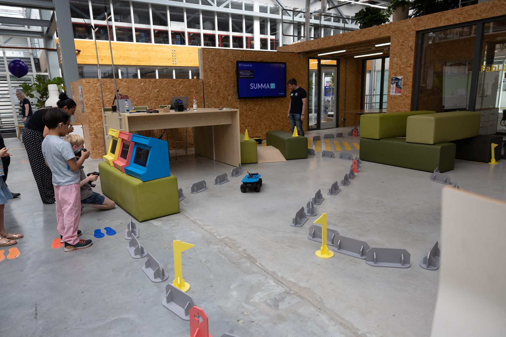
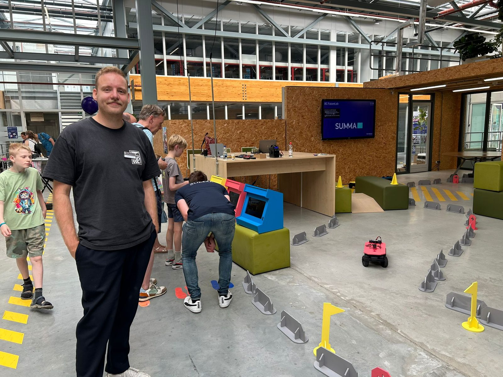
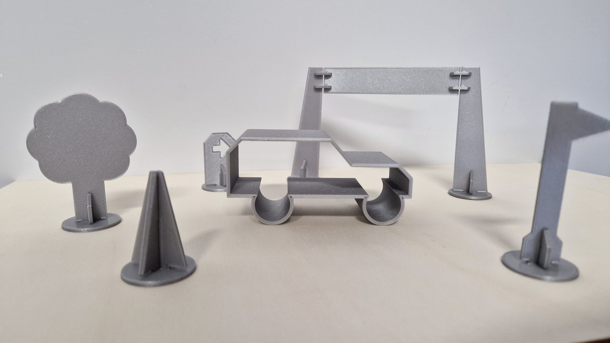
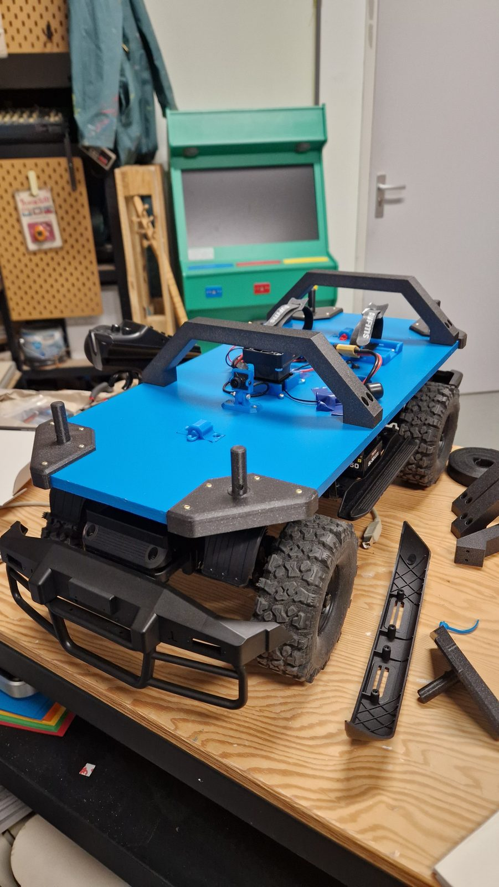

Bouw je eigen droombaan
Niet alleen mijn motto, maar ook de naam van dit project.
Samen met het Summa College Techniek zijn we jongeren aan het enthousiasmeren voor techniek. Met Bouw je droombaan ontwerpen jongeren hun eigen racebaan, pakken daarna zelf het stuur en racen, vanuit het zicht van de bestuurder, over hun eigen traject.
We hebben het concept bedacht en de materialen zelf gemaakt: de auto's, de baanonderdelen en de schermen. Gelukkig mag ik nog iedere dag spelen.
Maar ik heb ook een persoonlijke link met dit project. Ik weet zeker dat kleine Jantje Willie dit héél nice had gevonden. Want op z'n twaalfde maakte hij al z'n eigen computerspelletjes, maar haalde op school wel héél lage cijfers.
Kleine Jantje Willie is een beelddenker die vormen ziet in woorden, en verhalen vertaalt naar scenario's die hij voor zich ziet alsof hij er echt bij was. Die vertaling zorgt soms voor wat ruis op de lijn. Je ziet Jantje Willie dan echt even bufferen, alsof hij een nieuw filmpje moet laden. Maar het is ook zijn grootste kracht: hij leest moeiteloos technische schema's, maakt abstracte dingen visueel en begrijpelijk, en bedenkt nu de leukste dingen door creativiteit en technologie te combineren.
Daarom bouwde ik mijn eigen droombaan.
Zoiets voor jouw school of festival? Kijk eens bij interactieve installaties.



